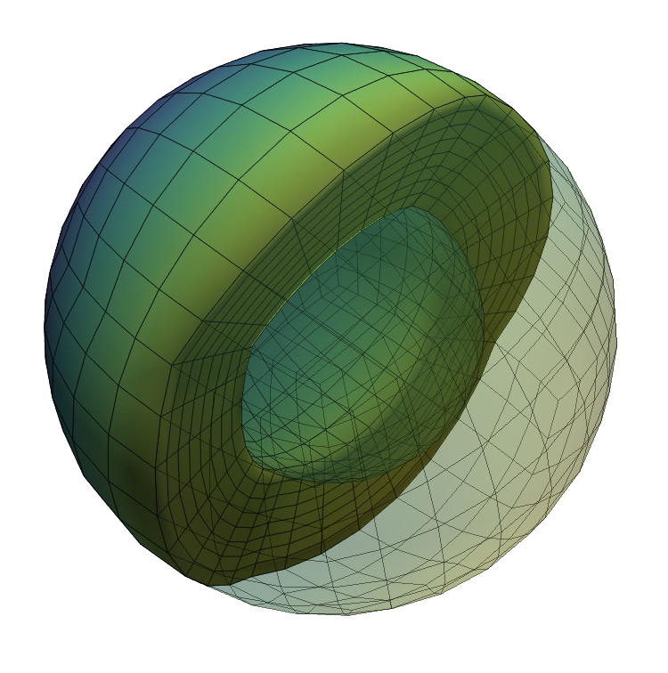

import underworld3 as uw
import numpy as np
import sympyNotebook 1: Meshes

Introducing meshes: how to build them, interrogate them and visualise them.
mesh.view()- Mesh refinement options
- Mesh coordinates
- Mesh coordinate systems
- Mesh deformation
Mesh adaptivity is a work-in-progress.
Underworld meshing module
Underworld can read mesh definition files from the gmsh package but there are some constraints on how to specify boundaries if those meshes are to be used to solve numerical problems.
The underworld.meshing module has a collection of gmsh (python) examples for common, simple meshes.
mesh = uw.meshing.uw.meshing.CubedSphere(
radiusOuter=1.0,
radiusInner=0.547,
numElements=8,
refinement=0,
simplex=True,
verbose=True,
)Constructing UW mesh from gmsh .meshes/uw_cubed_spherical_shell_ro1.0_ri0.547_elts8_plexTrue.msh
Mesh refinement levels: 0
Mesh coarsening levels: None
Populating mesh coordinates CoordinateSystemType.SPHERICALMesh coordinate arrays
If you need to check the physical coordinates of the mesh, there is a data array
mesh.datawhich is a read-only numpy view of the coordinates (on the local segment of the mesh when running in parallel)
mesh.dataarray([[ 0.57735027, 0.57735027, -0.57735027],
[-0.57735027, 0.57735027, -0.57735027],
[-0.57735027, -0.57735027, -0.57735027],
...,
[ 0.61340251, 0.4866531 , 0.41538064],
[ 0.56556024, 0.42209717, 0.44274422],
[ 0.51755571, 0.41031492, 0.44421012]])There are other pre-built meshes you can try. This is a cuboid divided into regular tetrahedra:
mesh_usb = uw.meshing.UnstructuredSimplexBox(
minCoords = (-1.0, -1.0, -1.0),
maxCoords = (+1.0, +1.0, +1.0),
cellSize = 0.2,
regular=True,
verbose=False,
)and this is a two-dimensional annulus mesh
mesh_ann = uw.meshing.Annulus(
radiusOuter=1.0,
radiusInner=0.547,
cellSize= 0.5,
cellSizeOuter=0.033,
cellSizeInner=0.05,
verbose=False,
)The meshing infrastructure for underworld3 is documented here: https://underworldcode.github.io/underworld3/main_api/underworld3/meshing.html
import pyvista as pv
import underworld3.visualisation as vis
# Try out each one !
pvmesh = vis.mesh_to_pv_mesh(mesh)
pvmesh.point_data["z"] = vis.scalar_fn_to_pv_points(pvmesh, mesh.CoordinateSystem.X[2])
pvmesh1 = pvmesh.copy()
if mesh.dim==3:
pvmesh_c = pvmesh.clip( normal='z', crinkle=True, inplace=False, origin=(0.0,0.0,0.01))
pl = pv.Plotter(window_size=(750, 750))
pl.add_mesh(pvmesh_c, show_edges=True, show_scalar_bar=False, opacity=1.0)
pl.add_mesh(pvmesh1, show_edges=True, show_scalar_bar=False, opacity=0.3)
# Save and show the mesh
pl.export_html("html5/spherical_mesh_plot.html") from IPython.display import IFrame
IFrame(src="html5/spherical_mesh_plot.html", width=600, height=400)Interactive Image: Spherical shell mesh cut in half and overlain with transparent view of the whole mesh. Cubed sphere discretisation using hexahedral elements
Coordinate systems
The mesh has an associated “natural” coordinate system (usually Cartesian), but it may also have other, more convenient, coordinate systems.
For example, the spherical mesh above has a Cartesian coordinate system which is the one used to navigate the mesh and describe the location of each point. It also has a spherical \((r, \theta, \phi)\) system which is symbolic and can be expanded in terms of the Cartesian coordinates.
## The coordinate system
X = mesh.CoordinateSystem.X
R = mesh.CoordinateSystem.R
display(X)
display(R)
display(uw.function.expression.unwrap(R))\(\displaystyle \left[\begin{matrix}\mathrm{x} & \mathrm{y} & \mathrm{z}\end{matrix}\right]\)
\(\displaystyle \left[\begin{matrix}r & \theta & \phi\end{matrix}\right]\)
\(\displaystyle \left[\begin{matrix}\sqrt{\mathrm{x}^{2} + \mathrm{y}^{2} + \mathrm{z}^{2}} & \operatorname{acos}{\left(\frac{\mathrm{z}}{\sqrt{\mathrm{x}^{2} + \mathrm{y}^{2} + \mathrm{z}^{2}}} \right)} & \operatorname{atan}_{2}{\left(\mathrm{y},\mathrm{x} \right)}\end{matrix}\right]\)
Mesh information
mesh.view() allows you to interrogate the mesh to identify the mesh data structures (which means you can find by name any variable that is automatically constructed by, for example, one of the numerical solvers).
It also identifies boundaries of the mesh and their sizes when distributed in parallel. There is a PETSc equivalent which is also called and this contains low-level information on the mesh topology.
mesh.view()
Mesh # 0: .meshes/uw_cubed_spherical_shell_ro1.0_ri0.547_elts8_plexFalse.msh
Number of cells: 3072
No variables are defined on the mesh
| Boundary Name | ID |
| -------------------------------- |
| Lower | 1 |
| Upper | 2 |
| Null_Boundary | 666 |
| All_Boundaries | 1001 |
| All_Boundaries | 1001 |
| UW_Boundaries | -- |
| -------------------------------- |
Use view(1) to view detailed mesh information.
Mesh deformation
You can adjust the coordinates using:
mesh.deform(local_coordinate_array)This rebuilds all the finite element gadgets that live on the mesh but it will not do any remeshing of the points. It is useful for small deformation such as following a free surface but not large-deformation adaptive meshing.
See Notebook 8 for a short mesh-deformation example.